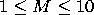
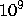

Your task is to write the part of the SQL server YourSQL responsible for processing queries.
Your server manages a relational database consisting of several tables. Each table has rows and columns; each column has a fixed type (number or string) and a name. Each cell of the table also has a type, which is equal to the type of its column. No two different columns of a table have the same name. Tables also have distinct names.
Here is a sample table (the upper row contains column names;
string cells are aligned to the left, numeric to the right):
| Account | LastName | FirstName | Balance |
| 1 | Ivanov | Petr | 2500 |
| 2 | Petrov | Ivan | 2000 |
| 3 | Ivanov | Ivan | 3000 |
An SQL query is a string telling the server to get some or all of data from one or more tables, form it up into a temporary table and transfer it to the client (after that, the temporary table is destroyed). Here is the YourSQL query syntax:
query ::= `SELECT' select `FROM' from possible-where possible-order;
select ::= `*' | column-list;
column-list ::= name | name `,' column-list;
from ::= name | inner-from `INNER' `JOIN' inner-from `ON' name `=' name;
inner-from ::= name | `(' inner-from `INNER' `JOIN' inner-from `ON' name `=' name `)';
possible-where ::= empty | `WHERE' where;
where ::= where-2 | where-2 (`AND' | `OR') where;
where-2 ::= `(' where `)' | `NOT' where-2 | value operation value;
operation ::= `=' | `<' | `>' | `<=' | `>=' | `<>';
value ::= number | string-constant | name;
possible-order ::= empty | `ORDER' `BY' order-by;
order-by ::= order-column | order-column `,' order-by;
order-column ::= name (empty | `ASCENDING' | `DESCENDING');
empty ::= ;
number ::= (empty | `+' | `-') . unsigned;
unsigned ::= digit | digit . unsigned;
digit ::= `0' | `1' | `2' | `3' | `4' | `5' | `6' | `7' | `8' | `9';
name ::= letter | name . (letter | digit);
letter ::= `a' | `b' | `c' | `d' | `e' | `f' | `g' | `h' | `i' | `j' | `k' | `l' | `m'
| `n' | `o' | `p' | `q' | `r' | `s' | `t' | `u' | `v' | `w' | `x' | `y' | `z'
| `A' | `B' | `C' | `D' | `E' | `F' | `G' | `H' | `I' | `J' | `K' | `L' | `M'
| `N' | `O' | `P' | `Q' | `R' | `S' | `T' | `U' | `V' | `W' | `X' | `Y' | `Z';
string-constant ::= `"' . escaped-string . `"';
escaped-string ::= empty | escaped-symbol . escaped-string;
escaped-symbol ::= digit | letter | special-symbol | other-symbol;
special-symbol ::= `\\' | `\"';
other-symbol ::= `!' | `#' | `$' | `%' | `&' | `'' | `(' | `)' | `*' | `+' | `,' | `-'
| `.' | `/' | `:' | `;' | `<' | `=' | `>' | `?' | `@' | `[' | `]' | `^' | `_' | ``' | `{' | `|' | `}'} | `~';
The period (.) between two subsequent terms means that there may be no spaces between these terms. If there is no period between two terms, then they may be separated by any amount of spaces, tab characters and carriage returns; two names that are not separated by a period will be separated by at least one space, tab character or carriage return. Parenthesis are used to group terms. There is no difference between uppercase and lowercase letters except in string constants.
The query is executed the following way:
For example, if table1 is the table above and table2 is
| From | To | Amount |
| 1 | 2 | 1000 |
| 2 | 3 | 2000 |
| 3 | 1 | 3000 |
| 2 | 1 | 10 |
then the result of `from1 INNER JOIN from2 ON Account=From' will be
| Account | LastName | FirstName | Balance | From | To | Amount |
| 1 | Ivanov | Petr | 2500 | 1 | 2 | 1000 |
| 2 | Petrov | Ivan | 2000 | 2 | 3 | 2000 |
| 2 | Petrov | Ivan | 2000 | 2 | 1 | 10 |
| 3 | Ivanov | Ivan | 3000 | 3 | 1 | 3000 |
\\ and
\" are treated as \ and
" respectively in escaped strings. All logical
and comparison operations have their usual meaning; strings
are compared lexicographically; compared values will always
be of same type. The operations are executed from left to
right; i.e., `a AND b OR c' means `(a AND b) OR c'. The
names in the WHERE clause are the names of the columns of
the table.
The first line of the input contains the number of the
test cases, which is at most 35. The descriptions of the
test cases follow.
The first line of a test case description contains a single integer
K (1 ≤ K ≤ 20), denoting the number of tables. The
table descriptions follow. The first line of a table
description is the name of the table followed by two
integers, M and N (
,
), which are the number of columns and the number of
rows respectivelty. Each of the next M lines contains the
name of a row and its type (S for string, I for
numeric). Each of the next N lines contains M strings or
integers, being the table data. The i-th line contains
data for row i. The strings and the numbers in the input
tables are separated by spaces; the strings are not escaped.
The rest of the input file contains the query.
The numbers in the input may not exceed  by absolute value and do not have leading zeroes; the strings are of length no more than 100, the length of the names does not exceed 20. The overall number of cells in all the input tables does not exceed 100000; the overall number of string cells in all the input tables does not exceed 10000. There are no more than 10 INNER JOIN statements. In each joining operation, the product of the number of rows in the first table and the number of rows in the second table does not exceed 10000; the product of the previous number and the sum of the number of columns of the two tables does not exceed 100000. The search table contains at most 100000 cells; at most 10000 of them may be strings. If there is a WHERE clause, the search table has at most 1000 rows. The length of the WHERE clause (excluding the word `WHERE') does not exceed 400. There are at most five columns in the ORDER BY clause. If the SELECT word is followed by a column list, then this list contains at most 10 columns and the product of the amount of the columns in the list and the number of rows in the result table does not exceed 10000.
For each test case in the input, output the result table in the same format as the tables in the input without the table name and type specifications (see sample output). Note that there is only one correct order of the columns and the rows of the resulting table (see the rules above). Output the column names in the same case that they were in the input. Output a blank line between test cases.
| Input | Output |
1 2 AccountInfo 4 3 Account I LastName S FirstName S Balance I 1 Ivanov Petr 2500 2 Petrov Ivan 2000 3 Ivanov Ivan 3000 AccountTransfers 3 4 From I To I Amount I 1 2 1000 2 3 2000 3 1 3000 2 1 10 SELECT LastName, FirstName, To, Amount FROM AccountInfo INNER JOIN AccountTransfers ON Account=From WHERE FirstName<>"Petr" ORDER BY LastName DESCENDING, Amount | 4 3 LastName FirstName To Amount Petrov Ivan 1 10 Petrov Ivan 3 2000 Ivanov Ivan 1 3000 |